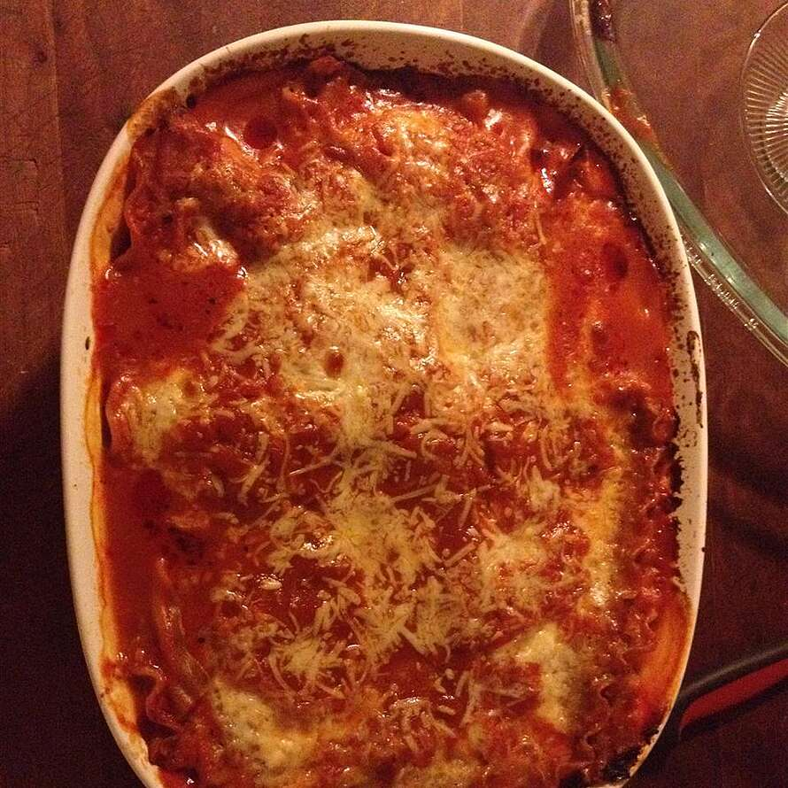

This is very good lasagna.Its quick to put together,and my family devoured it.
I used no cook lasagna noodles,and added egg to the ricotta cheese to hold it together a little more,and it turned out well. Also,I added some seasonings to the ricotta cheese mixture.Its not restaurant quality lasagna,but for a week night supper,it suits me fine.
Spread about 1 cup pasta sauce in 2-quart shallow baking dish (11x7-inch).
Top with 3 uncooked noodles, ricotta cheese, 1 cup mozzarella cheese, Parmesan cheese and 1 cup pasta sauce.
Top with remaining 3 uncooked noodles and remaining pasta sauce. Cover.Bake at 375 degrees F for 1 hour Uncover and top with remaining mozzarella cheese.
Let stand 5 minutes.